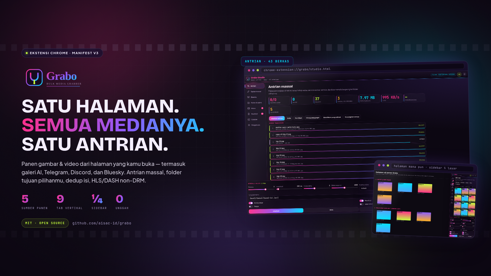

Kit promosi & merek
SATU HALAMAN.
SATU HALAMAN.
SEMUA MEDIANYA.
Semua materi di halaman ini dirender dari HTML/CSS dan tangkapan layar asli ekstensi — bukan mockup. Bebas dipakai ulang di bawah lisensi MIT.
5sumber panen
9tab vertikal
¼sidebar
0unggah

Video promo
1920×1080 · 30 fps · 24 detik · dengan suara
Enam bingkai: judul → panen 5 sumber → galeri & pilihan → antrian → folder & manifes → penutup. Gerak kamera lembut, transisi silang, dan bantalan suara yang disintesis lokal.


Kotak perangkat lunak
3D CSS, bukan render eksternal


Poster & hero
siap cetak & siap web


Aset sosial
OG, persegi, dan story


Merek
logo, ikon, palet, tipografi


Magenta#FF2E88
Ungu#8B5CFF
Sian#00E5FF
Spark#C6FF3D
Bahaya#FF4D5E
Peringatan#FFB020
Ink#0B0611
Tipografi: Bricolage Grotesque (judul), Plus Jakarta Sans (teks), JetBrains Mono (angka & label) — semuanya SIL OFL 1.1, dibundel lokal di fonts/. Motif visual: ban berjalan dan tiket antrian berperforasi.